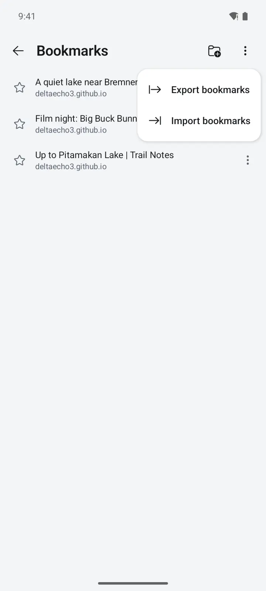
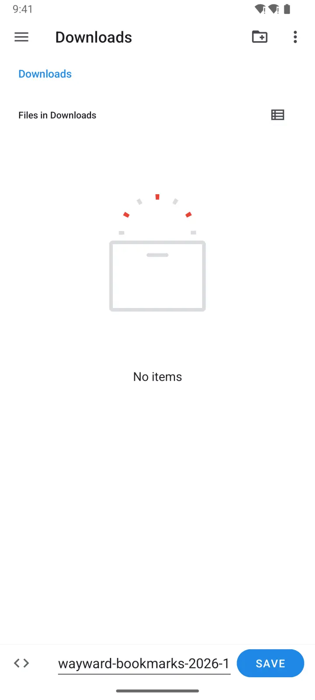
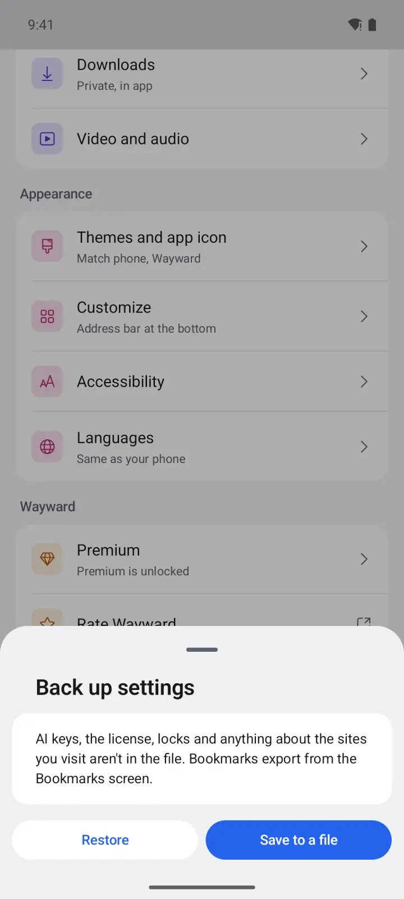
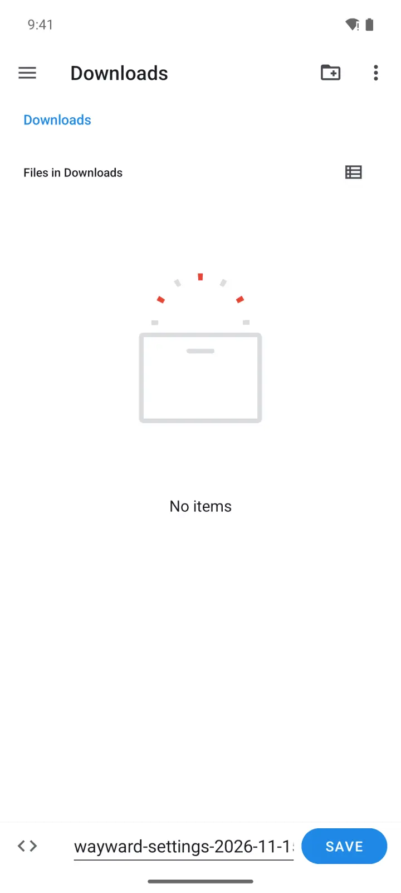
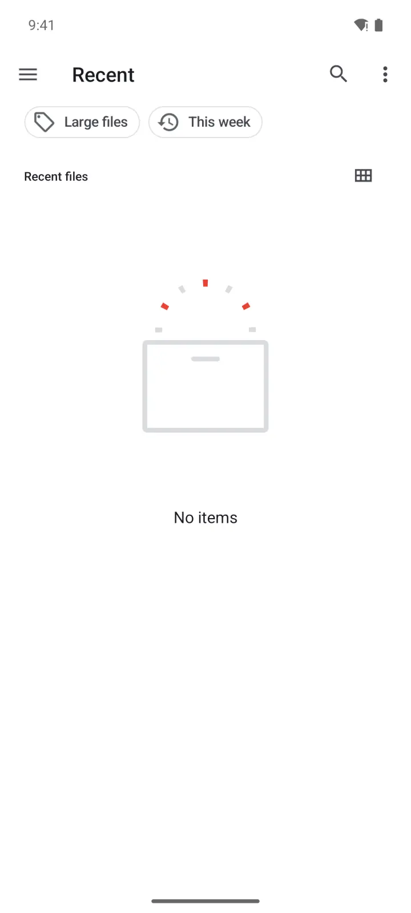

Bring your bookmarks and settings
How-to
Import bookmarks from another browser. You can also back up Wayward settings and restore them on this phone or a new one.
Import bookmarks from another browser
Wayward reads the bookmarks file other browsers save, a file ending in .html. Android doesn't let one browser read another's bookmarks, so first get that file from your old browser.
Get the file from your old browser
Brave, DuckDuckGo and Vivaldi can save the file on the phone. The others can't, but there's a way round for most.
Brave
Open Bookmarks, tap the three dots at the top, then "Export bookmarks". The file goes to your Download folder as bookmarks.html. If you've exported before, it's bookmarks (1).html and so on, so pick the newest.
DuckDuckGo
Open the menu, then "Bookmarks", tap the three dots at the top, then "Export". Choose a folder, like Download, and save. The file is named bookmarks_ddg and the date.
Vivaldi
Tap the Panel button at the bottom left to open the Bookmarks panel, tap the three dots at its top, then "Export Bookmarks". Look for the file in Download.
Chrome
Chrome on a phone can't save the file, but Google Takeout can, all on the phone:
- Make sure Chrome keeps its bookmarks in your Google Account. In Chrome, open "Settings", tap your name, then "Save in account". Bookmarks kept only on the phone don't go to Takeout.
- Go to takeout.google.com with the same account. Untick everything except Chrome, then "Next step" and "Create export".
- Google emails you a link, sometimes after a while. Download the archive, then open it in your Files app and tap "Extract".
- The file is in the Takeout folder, then Chrome: Bookmarks.html.
Or, on a computer signed in to Chrome with the same account: Chrome's "Bookmark manager", the three dots at its top, then "Export bookmarks". Your phone's bookmarks are in that file too, loose at its top.
Firefox
Firefox on a phone can't save the file. With Firefox on a computer:
- Turn on Firefox Sync on the phone, and sign in to Firefox on the computer with the same account.
- On the computer, open "Manage bookmarks". Your phone's bookmarks are in "Mobile Bookmarks".
- Firefox leaves Mobile Bookmarks out of its export, so select everything inside it, copy it, and paste it into a new folder elsewhere. That copy syncs back to the phone; delete it once you're done.
- "Import and Backup", then "Export Bookmarks to HTML".
Microsoft Edge
Edge on a phone can't save the file. Sync it with Edge on a computer (the same Microsoft account), then on the computer open "Favorites", the three dots, then "Export favorites". Check that the file has your phone's favorites; on a computer they're under "Mobile favorites".
Opera
Opera on a phone can't save the file. Sync it with Opera on a computer (the same Opera account), then on the computer open "Show all bookmarks" and use the import and export button at the bottom of the left panel to export. Check that the file has your phone's bookmarks.
Samsung Internet
Samsung Internet (now called Samsung Browser) can't save its bookmarks to a file, on a phone or a computer.
A file made on a computer
Copy it into the phone's Download folder over USB, email it to yourself and save the attachment, or put it in your cloud drive, which your phone's file picker can usually open.
Import it
- In Wayward, open the ⋮ menu, then Bookmarks.
- Tap the three dots at the top of Bookmarks (TalkBack: More), then Import bookmarks. A short guide opens first, with the steps above for each browser: tap a browser to see its steps.
- Tap Choose file and pick the file.
Your bookmarks land in a new folder named for the day you imported them, like Imported Nov 14, 2026, and Wayward says how many came in. You can also import from the first-run setup's Bring your things page.

If it doesn't work:
- No bookmarks found in that file. The file isn't a bookmarks file. Export again from the other browser, and pick the .html file it saves.
- That file is too big to import. Try exporting a smaller part, like one folder at a time.
- Couldn't read or save the file. Your phone couldn't open it. Copy it to your phone's Downloads folder and try again.
Save your bookmarks to a file
Bookmarks > three dots > Export bookmarks saves them all to a file named wayward-bookmarks with the date. Almost any browser can import it, and so can Wayward on another phone.

Back up your settings
- Open the ⋮ menu, then Settings.
- Near the end, in the Wayward group, tap Back up settings.
- Tap Save to a file, pick where to keep it, and save.
Wayward says Settings saved. The file is named wayward-settings with the date. Keep it somewhere safe, like your cloud drive, if you want it after a reset or on a new phone.


Restore your settings
- Settings > Back up settings > Restore, and pick the file. (The first-run setup's Restore a backup does the same.)
- Wayward shows Restore these settings? with when the file was saved, and a These change: list of the most important settings that would change.
- Tap Restore.
Wayward says Settings restored. Only restore a file you saved yourself.

What's in the settings file
The file has your choices in Settings: Shields (and uBlock Origin's filter lists), search, tabs and history, your theme and color, Customize (bars, menu, home page), accessibility, video and audio, the languages websites see, most download settings, the AI assistant's provider, model, name and personality, and your spaces' names and colors.
It leaves out anything secret or about the sites you visit:
- your AI key, so you'll need to add it again;
- locks, and the AI assistant's on switch and how much it may do on its own;
- your bookmarks, start page shortcuts, tabs, history and downloads;
- sites you picked for anything, like sites kept light or always shared with the assistant;
- your download folder, the home-screen icon, Wayward's own language and your wallpaper picture.
If something goes wrong
- That isn't a Wayward settings file. Pick the .json file Wayward saved.
- Settings restored, but uBlock Origin's filter lists couldn't be set. Try again in a moment. Everything else came back. Restore the same file again in a minute.
- Couldn't read or save the file. Your phone couldn't read or write it there. Try another folder.